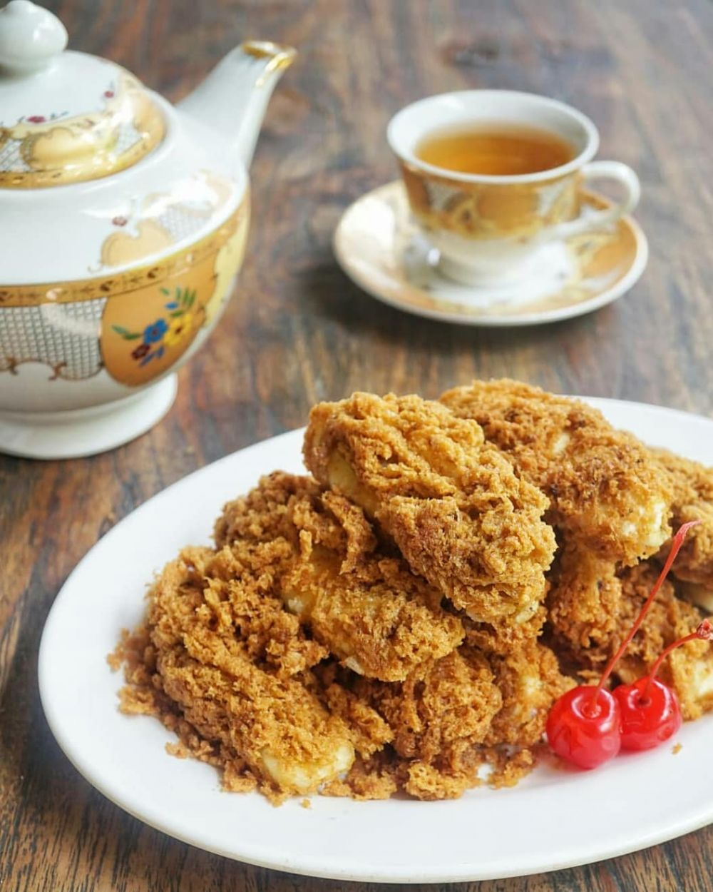

Cara Membuat Pisang Goreng Gula Merah

Source : Instagram/@numpangsaveresep.id
Alat Untuk Membuat Pisang Goreng Gula Merah
Wajan untuk menggoreng
Sendok
Minyak Goreng
Piring
Bahan Untuk Membuat Pisang Goreng Gula Merah
2Pisang kepok, kupas, belah dua
25 gram tepung sagu
20 gram susu bubuk
50 gram gula merah, serut halus
1/4 sdt garam
1/4 sdt vanili
500 ml air
1 kuning telur
Untuk Cara Membuatnya Sebagai berikut